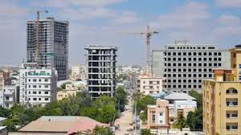

Somalia did not give students learning enough recources to learn.I would improve by giving students up to date technology, and more opportunities to learn different career fields.
Somalia struggled to build institutions that balanced clan with national governance. Governments concentrated did not share power instead of creating systems where major clans and regions felt represented. Independent courts, and local power-sharing could have reduced later conflict.
Somalia was dependent on livestock exports and vulnerable to drought. Better water systems, and more trade items might have created a better economy. Investing in fossil fuels would also improve the economy.
